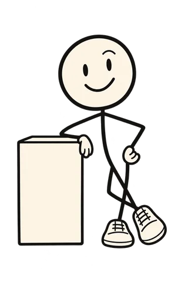
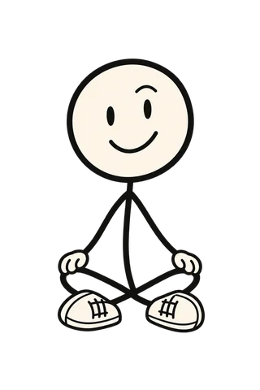

I park in a different spot every day and then walk the whole car park pressing the key like it's a metal detector.
— Beeping, Ursynów
Say "parked on B2" as you lock it. Next time, ask me. I'll walk you there.
Advice for problems too small to ask anyone else
An advice column for the stuff that falls through the cracks of a normal day. Parcel codes. Mum's birthday. The name of that place. Write in, he writes back.
Doddy is an AI, not a person. He keeps what you tell him on your iPhone.
Real problems, slightly exaggerated. Answers first, one joke at most.
I park in a different spot every day and then walk the whole car park pressing the key like it's a metal detector.
— Beeping, Ursynów
Say "parked on B2" as you lock it. Next time, ask me. I'll walk you there.
My son's feet grow every time I look away. I'm in the shoe shop. I'm guessing.
— Size unknown, Praga

31. You told me in September. He'll be 32 by Christmas, I'll remind you.
Marta told me a book I'd love. That was May. I've asked her twice. I can't ask a third time.
— Shameful, Żoliborz
The Hobbit. Your words: "the one with the dragon". You're welcome.
I'm in Paris. The man at the kiosk has asked me something twice. We are both getting nervous.
— Nodding, 10th arr.
He's asking: eat in or take away? Say "à emporter" and point at the door. Also: I'm still learning this one.
Alex texted "yesterday was fun :)". I have written and deleted eleven replies. One of them was just "hey".
— Typing…, Śródmieście
"Yesterday was fun. Next week?" Short, confident, done. You press send. I never do.
Tomorrow has the dentist, lunch with Alex and bread for the weekend. It's 23:30. I have nothing left.
— Horizontal, Mokotów

Three things, one card, one tap. Untick any you don't want. Then sleep.
Mum mentioned a thing she wanted. In March. On the phone. While I was making toast.
— Bad child, Bielany
You said "Mum wants the blue teapot from the market" on 14 March. Market's on Saturday. I'll nudge you Friday.
Does it rain at four? The window says no. The window lied on Tuesday.
— Damp, Ochota
Yes. Jacket. Obviously.
Some of these Doddy answers today, some he's practising. What can Doddy do? says which is which, moment by moment.
His rules, which are also why you can trust the answers.
Drafts are his. Sending is yours. Always.
He only keeps what you told him, in your words, with the date.
When he isn't, he says "I don't know". That counts as an answer.
Nothing is added to your calendar or reminders until you tap. Then he reads it back.
He's an AI. Helpful first, funny second, never guilt-tripping.
Serious moments get no jokes. He can tell.
Dear Doddy,
P.S. He's on iPhone first, a few people at a time. Leave your email and your letter's in the pile.
Early access opens in small batches. Your email, nothing else.